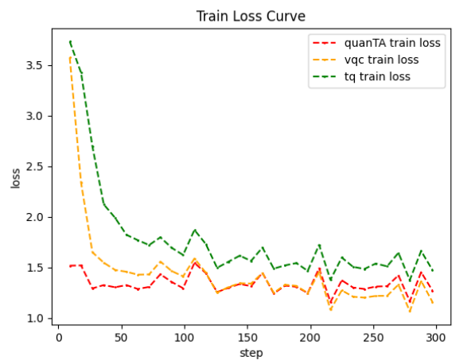

Quantum Large Model Fine-Tuning demo¶
In recent years, with the widespread adoption of large models and the gradual increase in their scale, training large-scale quantum machine learning models has led to a significant rise in training costs. To reduce the training resources required for fine-tuning large models, several fine-tuning methods have been proposed. These methods no longer fine-tune all parameters of the large model but instead train a small number of parameters through the proposed techniques, allowing the large model to achieve performance on downstream tasks that is no worse than full-parameter fine-tuning. However, fine-tuning methods based on quantum circuits have not yet gained widespread adoption.
VQNet , in combination with Llama Factory and peft , enables large model fine-tuning tasks based on quantum circuits.
Quantum Large Model Fine-Tuning Dependency Installation¶
Introduction to the Module: Installing Dependencies for Quantum Circuit-Based Large Model Fine-Tuning
To use quantum macromodel fine-tuning, you need the quantum-llm and pyvqnet packages, pyvqnet requires a version of 2.15.0 or above.
The first step is to install the quantum-llm library.
git clone https://gitee.com/craftsman_lei/quantum-llm.git
Afterwards, install the other dependencies and files according to the README.md file in quantum-llm.
# Download additional dependent libraries
pip install -r requirements.txt
# install peft_vqc
cd peft_vqc && pip install -e .
After installing the quantum-llm library and dependencies, install pyvqnet.
# install pyvqnet
pip install pyvqnet # pyvqnet>=2.15.0
Steps for fine-tuning training of quantum grand models¶
After installing the requirements package, you can refer to scripts such as train.sh under the directory /quantum-llm/examples/qlora_single_gpu/, and specify the parameters of the training base model, the selection of the fine-tuning module, and the path of the output of the fine-tuning module according to the scripts.
The Qwen2.5-0.5B model is available for download at https://huggingface.co/Qwen/Qwen2.5-0.5B?clone=true, as are the other models: Qwen2.5-0.5B If the download is not possible, you can download individual files from the URL and use them.
# Download Qwen2.5-0.5B
git clone https://huggingface.co/Qwen/Qwen2.5-0.5B
The train.sh script sample is as follows, determining the baseline model, dataset, output path and other parameter information, where model_name_or_path is put into the specified model, or if it is not accessible, it is put into the absolute path of the baseline model after downloading the baseline model by itself.
Note
Scripts such as train.sh, eval.sh, cli.sh, etc. are executed in the /quantum-llm/examples/qlora_single_gpu/ directory.
#!/bin/bash
CUDA_VISIBLE_DEVICES=1 python ../../src/train_bash.py \
--stage sft \
--model_name_or_path /download path/Qwen2.5-0.5B/ \
--dataset alpaca_gpt4_en \
--tokenized_path ../../data/tokenized/alpaca_gpt4_en/ \
--dataset_dir ../../data \
--template qwen \
--finetuning_type vqc \
--lora_target q_proj,v_proj \
--output_dir ../../saves/Qwen2.5-0.5B/vqc/alpaca_gpt4_en \
--overwrite_cache \
--overwrite_output_dir \
--cutoff_len 1024 \
--preprocessing_num_workers 16 \
--per_device_train_batch_size 1 \
--per_device_eval_batch_size 1 \
--gradient_accumulation_steps 8 \
--lr_scheduler_type cosine \
--logging_steps 10 \
--warmup_steps 20 \
--save_steps 100 \
--eval_steps 100 \
--evaluation_strategy steps \
--load_best_model_at_end \
--learning_rate 5e-5 \
--num_train_epochs 3.0 \
--max_samples 1000 \
--val_size 0.1 \
--plot_loss \
--fp16 \
--do-train \
#
sh train.sh
In the quantum macromodel fine-tuning module, compared with the classical macromodel fine-tuning module, three additional fine-tuning methods are added, which are:
vqc : vqc fine-tuning module based on VQNet implementation
quanTA : module for quantum tensor decomposition
tq : vqc module based on torch quantum implementation
The above train.sh sample is a sample script for fine-tuning the vqc module, if you use the other two fine-tuning modules, change finetuning_type to quanTA , tq and plot the results of the three module experiments, the results are as follows.
{kind=link}

The above figure shows the training results based on the Qwen2.5-0.5B benchmark model on the dataset alpaca_gpt4_en, in which it can be observed that the VQNet-based vqc module achieves the best loss convergence, thus proving the validity of the task of fine-tuning the large model based on the quantum lines.
The train.sh training script saves the fine-tuned module parameters to a specified directory with the --output_dir parameter.
This is then evaluated by the eval.sh script in the same directory /quantum-llm/examples/qlora_single_gpu/, which reads as follows.
#!/bin/bash
CUDA_VISIBLE_DEVICES=1 python ../../src/evaluate.py \
--model_name_or_path /download path/Qwen2.5-0.5B/ \
--template qwen \
--finetuning_type vqc \
--task cmmlu \
--task_dir ../../evaluation/ \
--adapter_name_or_path ../../saves/Qwen2.5-0.5B/vqc/alpaca_gpt4_en \
#
sh eval.sh
Specify the baseline model path by --model_name_or_path, and load the trained module for evaluation on the relevant task according to --adapter_name_or_path, with the -task parameter describing the cmmlu, ceval, mmlu parameters.
The quiz is then executed by calling the cli_demo.py file, again based on the cli.sh script in the current directory, which reads.
#!/bin/bash
CUDA_VISIBLE_DEVICES=1 python ../../src/cli_demo.py \
--model_name_or_path /download path/Qwen2.5-0.5B/ \
--template qwen \
--finetuning_type vqc \
--adapter_name_or_path ../../saves/Qwen2.5-0.5B/vqc/alpaca_gpt4_en \
--max_new_tokens 1024
sh cli.sh
More specific information about the relevant parameters¶
PEFT Parameter Description |
|
|---|---|
parameter name |
Detailed introduction |
stage |
Determine the large model training mode, pt for pre-training, sft for fine-tuning stage, and sft for experimentation. |
model_name_or_path |
model_name_or_path Select the path of the baseline model. |
dataset |
Select dataset, such as identity, alpaca_gpt4_zh, etc. |
tokenized_path |
Select the dataset tokenized path. |
dataset_dir |
Select the dataset path. |
template |
model template type, e.g. llama3, etc. |
finetuning_type |
Specify the finetuning method, such as lora, tq, vqc, quanTA. |
lora_target |
The function module is q_proj, v_proj. |
output_dir |
The path where the fine-tuning module is stored. |
overwrite_cache |
Whether to overwrite the cached training and evaluation sets. |
overwrite_output_dir |
Whether to overwrite existing files in the output directory. |
cutoff_len |
Specifies the length of the cutoff when processing data. |
preprocessing_num_workers |
Specifies the number of work processes to be used for preprocessing the data. |
per_device_train_batch_size |
Batch size per gpu, training parameter |
per_device_eval_batch_size |
Batch size per gpu, training parameter |
gradient_accumulation_steps |
Number of steps for gradient accumulation, training parameter |
lr_scheduler_type |
learning rate scheduler, training parameter |
logging_steps |
Printing interval |
warmup_steps |
warmup steps |
save_steps |
model save interval |
eval_steps |
evaluation save interval |
evaluation_strategy |
Evaluation strategy, set here to step-by-step evaluation. |
load_best_model_at_end |
Load the best performing model at the end of training. |
learning_rate |
learning rate |
num_train_epochs |
number of training rounds to be executed |
max_samples |
Maximum number of training samples |
val_size |
Validation set size |
plot_loss |
whether to save the training loss curve |
fp16 |
Whether to train with fp16 mixed precision, or float32 in the vqc module. |
do-train |
whether to specify a training task |
adapter_name_or_path |
Select the path of the file to be generated after training. |
task |
Select the task, currently supports ceval, cmmlu, mmlu. |
task_dir |
Specify the path of the task. |
q_d |
Specify the number of tensor decomposition of quanTA module, default is 4. |
per_dim_features |
Specify the number of tensor decomposition features of quanTA module, default is [16,8,4,2]. |